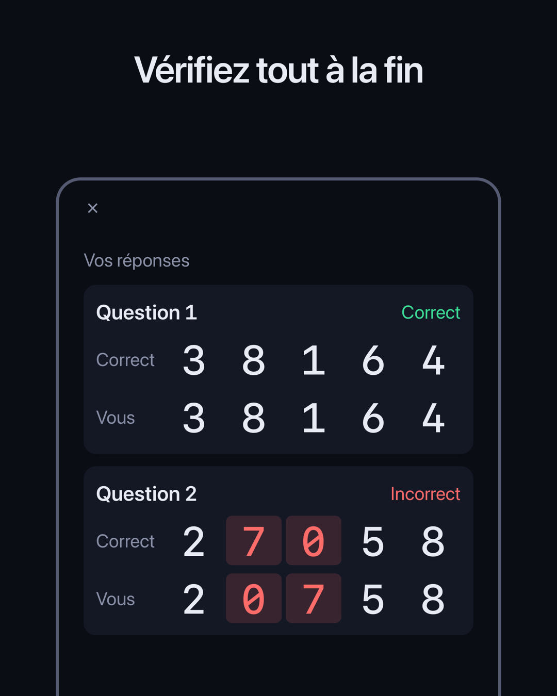
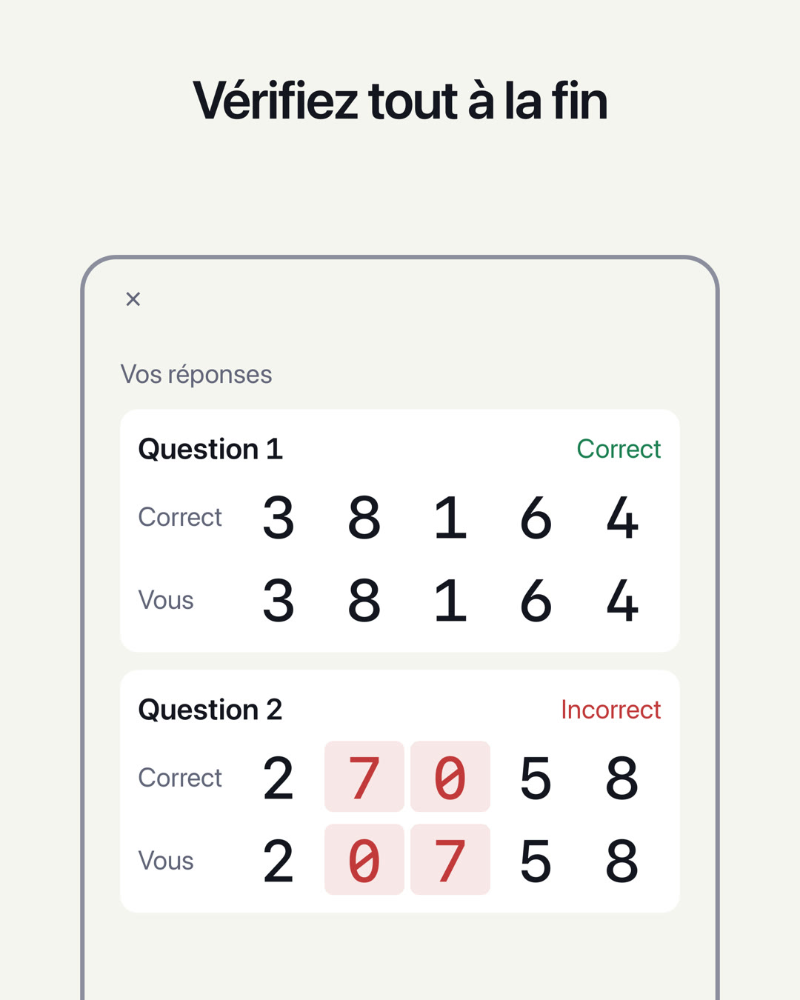

TEST DE MÉMOIRE DES CHIFFRES / DIGIT SPAN
Combien de chiffres pouvez-vous retenir ?
Les chiffres s’affichent un par un. Quand ils disparaissent, saisissez-les dans l’ordre où ils sont apparus. Choisissez un niveau et répondez à 5 questions. Le niveau le plus élevé pour lequel vous réussissez les 5 questions indique combien de chiffres vous pouvez retenir : votre empan de chiffres. Un test simple de mémoire à court terme.
Bientôt disponible (gratuit, pour iPhone)

Fonctionnement
- Regardez les chiffresIls s’affichent un par un (0,7 seconde chacun par défaut).
- Saisissez-les dans l’ordreEn mode À l’envers, saisissez-les du dernier chiffre apparu au premier.
- Vérifiez les 5 réponses5 questions avec le même nombre de chiffres. Après chaque question, seul le verdict (correct ou incorrect) s’affiche ; à la fin, toutes les réponses apparaissent ensemble. Le niveau le plus élevé pour lequel vous réussissez les 5 questions est votre empan de chiffres.
Mode d’emploi complet et questions fréquentes →
Fonctionnalités
- Deux tests, Dans l’ordre et À l’envers, chacun avec son propre record personnel. À l’envers, il faut remettre les chiffres dans l’ordre inverse de tête : la mémoire de travail entre aussi en jeu
- L’écran Résultat reprend les 5 questions : votre réponse à côté de la bonne, avec les chiffres erronés mis en couleur
- L’écran Historique montre l’évolution de votre record personnel jour par jour
- Réglez le niveau (2 à 12 chiffres) et la durée d’affichage de chaque chiffre (0,05 à 2,0 secondes)
- Choisissez la présentation des chiffres : Écran, Voix ou Les deux. Avec Voix, le test devient un test d’écoute
- Choisissez un thème (Système, Clair ou Sombre) et une couleur (Violet, Bleu, Orange ou Rose)
- Tous les chiffres sont à chasse fixe, sur un écran épuré, comme un instrument de mesure
- Les résultats restent sur votre appareil. Aucune connexion requise
On estime qu’un adulte retient en général 7±2 chiffres dans l’ordre (Miller, 1956). Cette app ne compte toutefois un niveau que lorsque vous réussissez les 5 questions avec le même nombre de chiffres : son mode de calcul diffère donc de celui des tests habituels. Elle sert à constater combien de chiffres vous pouvez retenir ; elle ne constitue pas un diagnostic médical et n’a pas pour but d’améliorer la mémoire.
App sœur
Publicité
Des bannières publicitaires s’affichent en bas des écrans Accueil, Résultat et Historique. Une publicité plein écran s’affiche au lancement d’un test (Commencer le test sur l’écran Accueil ou Réessayer sur l’écran Résultat ; une fois sur deux). Aucune publicité ne s’affiche pendant que vous regardez les chiffres, que vous saisissez votre réponse ou que votre réponse est vérifiée.
Aucune publicité ne s’affiche pendant un abonnement Premium (mensuel, à renouvellement automatique ; le prix est indiqué dans l’app et sur l’App Store). L’abonnement se renouvelle automatiquement, sauf résiliation au moins 24 heures avant la fin de la période en cours. Les conditions et la marche à suivre pour résilier figurent dans les Conditions d’utilisation. Toutes les fonctions de test et d’historique sont utilisables sans abonnement.